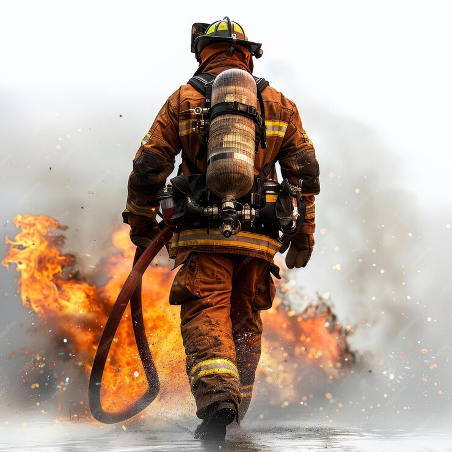

Heróis em Ação: A Vida de um Bombeiro
Descubra o Dia-a-Dia dos Bravos Protetores das Chamas
Conheça Nossa Trajetória e Compromissos

Ser bombeiro é uma profissão que inspira admiração
e respeito. Esses homens e mulheres dedicam suas vidas a proteger pessoas, animais e
propriedades de incêndios e outras emergências. A vida de um bombeiro é marcada por desafios
constantes, bravura excepcional e um profundo compromisso com a comunidade.
Tornar-se um bombeiro não é uma tarefa simples. Requer uma combinação de treinamento rigoroso,
aptidão física e uma mentalidade resiliente. O processo geralmente começa com a inscrição em uma
academia de bombeiros, onde os recrutas são submetidos a um treinamento intensivo. Eles aprendem
técnicas de combate a incêndios, salvamento e primeiros socorros. Além disso, devem estar
familiarizados com o uso de equipamentos especializados, como mangueiras, escadas e ferramentas
de resgate.
O treinamento físico é igualmente exigente. Bombeiros precisam estar em excelente forma física
para suportar as demandas do trabalho, que incluem carregar equipamentos pesados, subir escadas
em alta velocidade e resgatar vítimas em situações perigosas. Testes físicos rigorosos são uma
parte essencial do processo de seleção, garantindo que apenas os mais aptos possam prosseguir.
A rotina diária de um bombeiro é tudo menos monótona. Quando não estão respondendo a
emergências, bombeiros passam o tempo treinando, realizando manutenção em equipamentos e
participando de atividades comunitárias. Treinamentos contínuos são essenciais para manter suas
habilidades afiadas e garantir que estejam prontos para qualquer situação.
Manter os equipamentos em perfeito estado é crucial. Bombeiros realizam inspeções regulares em
caminhões, mangueiras, máscaras de respiração e outros equipamentos para garantir que tudo
esteja funcionando corretamente. A falha de um equipamento em uma situação de emergência pode
ter consequências catastróficas, portanto, a manutenção é levada muito a sério.
Quando a sirene toca, os bombeiros entram em ação. Cada segundo conta, e a resposta rápida pode
significar a diferença entre a vida e a morte. Incêndios estruturais são uma das emergências
mais comuns que enfrentam. Ao chegar ao local, os bombeiros avaliam rapidamente a situação,
buscam por vítimas e combatem as chamas. Trabalhar em condições extremas, com fumaça densa e
calor intenso, exige uma coragem e um treinamento excepcionais.
Além de incêndios, bombeiros respondem a uma variedade de outras emergências. Acidentes de
trânsito, por exemplo, muitas vezes requerem suas habilidades de resgate. Usando ferramentas
especiais, eles cortam veículos para liberar vítimas presas, fornecendo cuidados médicos
imediatos no local. Outras situações incluem salvamentos em altura, resgates aquáticos e
resposta a desastres naturais, como inundações e terremotos.
A vida de um bombeiro também envolve uma tremenda pressão psicológica. Eles frequentemente lidam
com situações traumáticas, como a perda de vidas e ferimentos graves. A capacidade de manter a
calma sob pressão e tomar decisões rápidas é vital. No entanto, o impacto emocional pode ser
profundo. Muitos bombeiros enfrentam estresse pós-traumático e outros problemas de saúde mental
devido às experiências vividas no trabalho.
Para ajudar a lidar com esses desafios, muitas brigadas de bombeiros oferecem apoio psicológico
e programas de bem-estar. O trabalho em equipe e o espírito de camaradagem também desempenham um
papel importante no apoio mútuo entre os bombeiros. Saber que podem contar uns com os outros é
essencial para enfrentar os momentos mais difíceis.
Além de responder a emergências, bombeiros desempenham um papel vital na educação e prevenção de
incêndios na comunidade. Eles visitam escolas, empresas e eventos comunitários para ensinar
sobre segurança contra incêndios, a importância de alarmes de fumaça e como criar planos de
evacuação. Essas atividades educativas ajudam a prevenir incêndios e salvar vidas.
Bombeiros também participam de iniciativas comunitárias, como programas de bem-estar e
segurança, e frequentemente atuam como modelos para os jovens. Sua presença e envolvimento na
comunidade ajudam a fortalecer os laços e a confiança entre os bombeiros e os cidadãos que
protegem.
O que impulsiona os bombeiros a enfrentar esses desafios diários é uma vontade inabalável de
servir. A motivação para proteger vidas e propriedades vai além do dever; é uma vocação. A
satisfação de salvar uma vida ou de proteger uma família da destruição é uma recompensa que
poucas outras profissões podem oferecer.
A vida de um bombeiro é uma vida de sacrifício e heroísmo. Eles são chamados a agir nos momentos
mais difíceis, colocando a segurança dos outros acima da própria. Cada intervenção, cada
resgate, cada incêndio extinto é um testemunho de sua coragem e dedicação.
Os bombeiros são verdadeiros heróis em ação. Sua vida é marcada por um compromisso incansável
com a proteção e o serviço à comunidade. Enfrentando perigos extremos e pressões emocionais,
eles permanecem firmes em sua missão de salvar vidas e preservar propriedades. Em cada
emergência, eles mostram o que significa ser um verdadeiro herói, e sua contribuição para a
sociedade é inestimável.
Ser bombeiro é uma profissão que inspira admiração e respeito. Esses homens e mulheres dedicam suas vidas a proteger pessoas, animais e propriedades de incêndios e outras emergências. A vida de um bombeiro é marcada por desafios constantes, bravura excepcional e um profundo compromisso com a comunidade.
Tornar-se um bombeiro não é uma tarefa simples. Requer uma combinação de treinamento rigoroso, aptidão física e uma mentalidade resiliente. O processo geralmente começa com a inscrição em uma academia de bombeiros, onde os recrutas são submetidos a um treinamento intensivo. Eles aprendem técnicas de combate a incêndios, salvamento e primeiros socorros. Além disso, devem estar familiarizados com o uso de equipamentos especializados, como mangueiras, escadas e ferramentas de resgate.O treinamento físico é igualmente exigente. Bombeiros precisam estar em excelente forma física para suportar as demandas do trabalho, que incluem carregar equipamentos pesados, subir escadas em alta velocidade e resgatar vítimas em situações perigosas. Testes físicos rigorosos são uma parte essencial do processo de seleção, garantindo que apenas os mais aptos possam prosseguir.
A rotina diária de um bombeiro é tudo menos monótona. Quando não estão respondendo a emergências, bombeiros passam o tempo treinando, realizando manutenção em equipamentos e participando de atividades comunitárias. Treinamentos contínuos são essenciais para manter suas habilidades afiadas e garantir que estejam prontos para qualquer situação.Manter os equipamentos em perfeito estado é crucial. Bombeiros realizam inspeções regulares em caminhões, mangueiras, máscaras de respiração e outros equipamentos para garantir que tudo esteja funcionando corretamente. A falha de um equipamento em uma situação de emergência pode ter consequências catastróficas, portanto, a manutenção é levada muito a sério.
Quando a sirene toca, os bombeiros entram em ação. Cada segundo conta, e a resposta rápida pode significar a diferença entre a vida e a morte. Incêndios estruturais são uma das emergências mais comuns que enfrentam. Ao chegar ao local, os bombeiros avaliam rapidamente a situação, buscam por vítimas e combatem as chamas. Trabalhar em condições extremas, com fumaça densa e calor intenso, exige uma coragem e um treinamento excepcionais.Além de incêndios, bombeiros respondem a uma variedade de outras emergências. Acidentes de trânsito, por exemplo, muitas vezes requerem suas habilidades de resgate. Usando ferramentas especiais, eles cortam veículos para liberar vítimas presas, fornecendo cuidados médicos imediatos no local. Outras situações incluem salvamentos em altura, resgates aquáticos e resposta a desastres naturais, como inundações e terremotos.
A vida de um bombeiro também envolve uma tremenda pressão psicológica. Eles frequentemente lidam com situações traumáticas, como a perda de vidas e ferimentos graves. A capacidade de manter a calma sob pressão e tomar decisões rápidas é vital. No entanto, o impacto emocional pode ser profundo. Muitos bombeiros enfrentam estresse pós-traumático e outros problemas de saúde mental devido às experiências vividas no trabalho.Para ajudar a lidar com esses desafios, muitas brigadas de bombeiros oferecem apoio psicológico e programas de bem-estar. O trabalho em equipe e o espírito de camaradagem também desempenham um papel importante no apoio mútuo entre os bombeiros. Saber que podem contar uns com os outros é essencial para enfrentar os momentos mais difíceis.
Além de responder a emergências, bombeiros desempenham um papel vital na educação e prevenção de incêndios na comunidade. Eles visitam escolas, empresas e eventos comunitários para ensinar sobre segurança contra incêndios, a importância de alarmes de fumaça e como criar planos de evacuação. Essas atividades educativas ajudam a prevenir incêndios e salvar vidas.Bombeiros também participam de iniciativas comunitárias, como programas de bem-estar e segurança, e frequentemente atuam como modelos para os jovens. Sua presença e envolvimento na comunidade ajudam a fortalecer os laços e a confiança entre os bombeiros e os cidadãos que protegem.
O que impulsiona os bombeiros a enfrentar esses desafios diários é uma vontade inabalável de servir. A motivação para proteger vidas e propriedades vai além do dever; é uma vocação. A satisfação de salvar uma vida ou de proteger uma família da destruição é uma recompensa que poucas outras profissões podem oferecer.A vida de um bombeiro é uma vida de sacrifício e heroísmo. Eles são chamados a agir nos momentos mais difíceis, colocando a segurança dos outros acima da própria. Cada intervenção, cada resgate, cada incêndio extinto é um testemunho de sua coragem e dedicação.
Os bombeiros são verdadeiros heróis em ação. Sua vida é marcada por um compromisso incansável com a proteção e o serviço à comunidade. Enfrentando perigos extremos e pressões emocionais, eles permanecem firmes em sua missão de salvar vidas e preservar propriedades. Em cada emergência, eles mostram o que significa ser um verdadeiro herói, e sua contribuição para a sociedade é inestimável.